A complete development journey: from the question “can you use higgsfield bridge to use blender” to a fully animated, audited 30-second previz shot — built entirely by conversation, with Claude driving a live Blender session through the Higgsfield Bridge MCP connector.
Inspired by “This Blender + Higgsfield AI Workflow Changes How You Make AI Video” on YouTube.
bl_* Blender, ae_* After Effects, pr_* Premiere. Routes each call to the user's machine.
bpy access, and streams results (data, screenshots) back up.
| Role | What it contributes | What it can NOT do |
|---|---|---|
| Claude | The only author: writes the scene code, designs the camera language, runs the audits, diagnoses failures, decides each iteration, manages the budget | Touch anything directly — every action goes through a tool |
| Blender | The geometry ground truth: physical dimensions, real camera projection, deterministic motion — and a Python runtime on the user's machine | Make it look like the real world |
| Higgsfield Bridge | The MCP nervous system: routes each tool call to Blender's main thread and back, making the local machine reachable from a chat | Decide anything; it only transports and executes |
| fal.ai models | wan-vace-14b/depth paints reality onto the depth structure; flux/schnell supplied a character reference for one test | Escape the depth map — geometry always wins (that's the point) |
| ffmpeg | The cutting room: frame-rate conversion, segment cuts, the face-reveal crossfade splice, the side-by-side proof | Create content; it only assembles |
Three properties make the combination work in practice:
Common operations are typed tools (bl_add_primitive, bl_add_camera, bl_set_frame, bl_screenshot…). Anything they can't express goes through bl_execute — arbitrary bpy Python that returns JSON. In this project the corridor geometry, the box-person rig, all keyframing, the node-based wall material, and every audit ran through bl_execute.
Before mutating anything, the agent must load procedure modules via bl_get_skill: a core procedure plus references for scene specification, modeling, look development, lighting/camera, animation, and a final audit gate. These enforce a discipline that turns out to matter: write a Scene Passport (the contract) first, block out before detailing, checkpoint before destructive edits, never claim visual success without actually viewing evidence, and never save over the user's file without an explicit request.
The agent can see: bl_screenshot captures the viewport, bl_get_scene_summary/bl_get_object return structure, and — the trick discovered late in this project — Blender can render frames directly into a folder the agent reads, giving true through-the-lens proof. Build → measure → look → fix → repeat.
Claude queried get_host_status — the bridge answered {"blr": false}: connector live, but no Blender attached. The answer was “yes, but nothing is connected”: install the add-on zip in Blender, sign in, connect. The plan for the shot was drafted while waiting.
Two status polls came back offline; the third returned {"blr": true}. Claude loaded six skill modules, inspected the scene (factory default cube), wrote the Scene Passport — 24 fps, frames 1–720, metric units, every asset routed as free local blocking, zero paid generation — then built in five audited stages, saving a backup after each:
| Stage | What happened | Backup |
|---|---|---|
| A | Timeline 1–720 @ 24 fps, 1280×720, collections, factory defaults removed | corridor_previz_A_setup.blend |
| B | 45 m corridor shell built from raw quads (from_pydata), matte-white material, 6 ceiling area lights + soft world | _B_corridor.blend |
| C | Box person: torso, head, legs, arms with hip/shoulder pivot origins, parented to a RIG_walk_root empty; head top verified at exactly 1.78 m | _C_person.blend |
| D | Walk: root travels 36 m linearly (1.2 m/s); limbs swing on 26-frame cyclic F-curves; camera keyed independently 3 m behind | _D_anim.blend |
| E | Audit: numeric motion samples at 7 frames + visual checks at frames 1/360/720 | _E_final.blend |
Two API landmines surfaced in Stage D — both fixed mid-flight: Blender 5.2's new slotted-action system removed action.fcurves (fixed with a channelbag-aware helper), and removing keyframes while iterating a live collection threw Keyframe not in F-Curve (fixed by re-fetching references each pass).
One design fix from looking: the first through-the-lens screenshot showed the figure filling the frame, feet cut off. Camera pulled from 3 m→4 m back, 1.6→1.7 m high, 35→30 mm. That correction came from viewed evidence, not from numbers — the numeric framing check had passed.
A node-based material, zero paid generation: 2×1 m white panels from a Brick texture (groove bump), plaster-grain Noise bump, and per-panel batch tonal variation (Voronoi remapped to 0.94–1.06 and multiplied into base color — real panels never quite match). Mapped in object space with u = x + y so one material runs seamlessly down side walls and the end wall.
The key idea is decoupling aim from route:
CTRL_cam_aim — empty riding the hero's chest → what the camera LOOKS AT
CTRL_cam_track — bob-free dolly matching his walk → what the camera RIDES
CAM_follow — parented to the track, Track-To constraint on the aim;
its LOCAL keyframes are the route
“Hero always in frame” becomes a structural guarantee instead of a hope. The route is five beats in one continuous move — back-follow hold → close left-side ¾ (25 mm) → accelerating overtake into a frontal hold, dollying backwards at 42 mm → high ¾ down-shot at 22 mm → descend over the right shoulder and settle wide (slow 30→33 mm push as the final accent). Auto-clamped Bezier keys give the accelerations and the eases into every pause; the lens keys live on the camera data-block, animated in the same beat rhythm.
A 120-sample sweep (every 6th frame: camera-to-wall clearance, camera-to-hero distance, hero's head and torso projected into normalized camera space) caught three real failures:
| Frame(s) | Failure | Fix |
|---|---|---|
| 200–235 | Head clipped out of frame during the tight side beat | Side beat widened (more distance, slightly higher) |
| 625 | Descent path swung within 0.56 m of the hero | Re-routed over his right shoulder with an explicit waypoint |
| 260 | Head clipped during the overtake pass itself | A framing accent: the aim point tilts up to head height during close passes, then settles back — in a 2.4 m corridor a full figure cannot fit the frame at a 1 m pass, so the camera deliberately pans up, which reads as intent |
Final sweep: zero violations — worst head position 0.82 NDC, minimum approach 0.9 m, camera never nearer than 0.25 m to a wall.
Verifying the frontal beat, bl_screenshot returned a frame with the hero half out of shot — flatly contradicting the numeric audit (head dead-center at NDC 0.5). Diagnosis ruled out every scene-side cause: one camera, correct evaluated world matrix, viewport confirmed in camera view. The OpenGL viewport capture was serving a stale draw that hadn't re-evaluated the Track-To constraint.
Resolution — and the most useful trick of the whole project: since Blender runs on the same machine as the agent's file workspace, Blender could render true EEVEE frames directly into the agent's readable folder. The real renders showed every beat perfectly framed. Rule confirmed: when two sources of evidence disagree, the render is the evidence.
Screen recordings of both versions were compressed ~30× with ffmpeg (screen content compresses absurdly well), this page was written, and everything was packaged into a git repository with GitHub Pages serving the videos you see below.
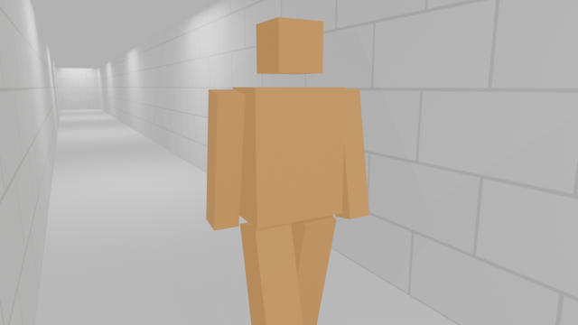
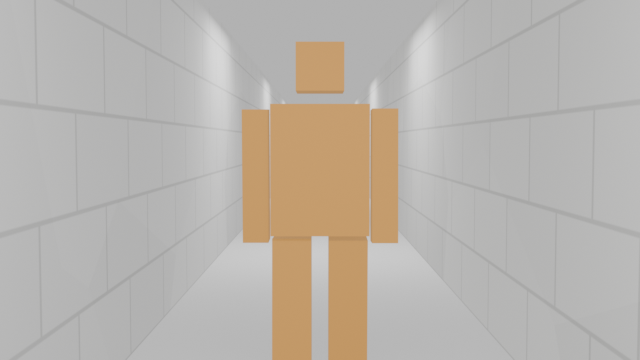
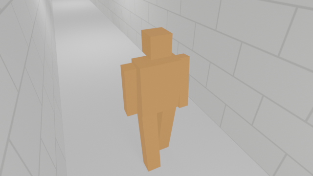
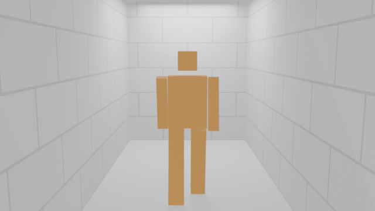
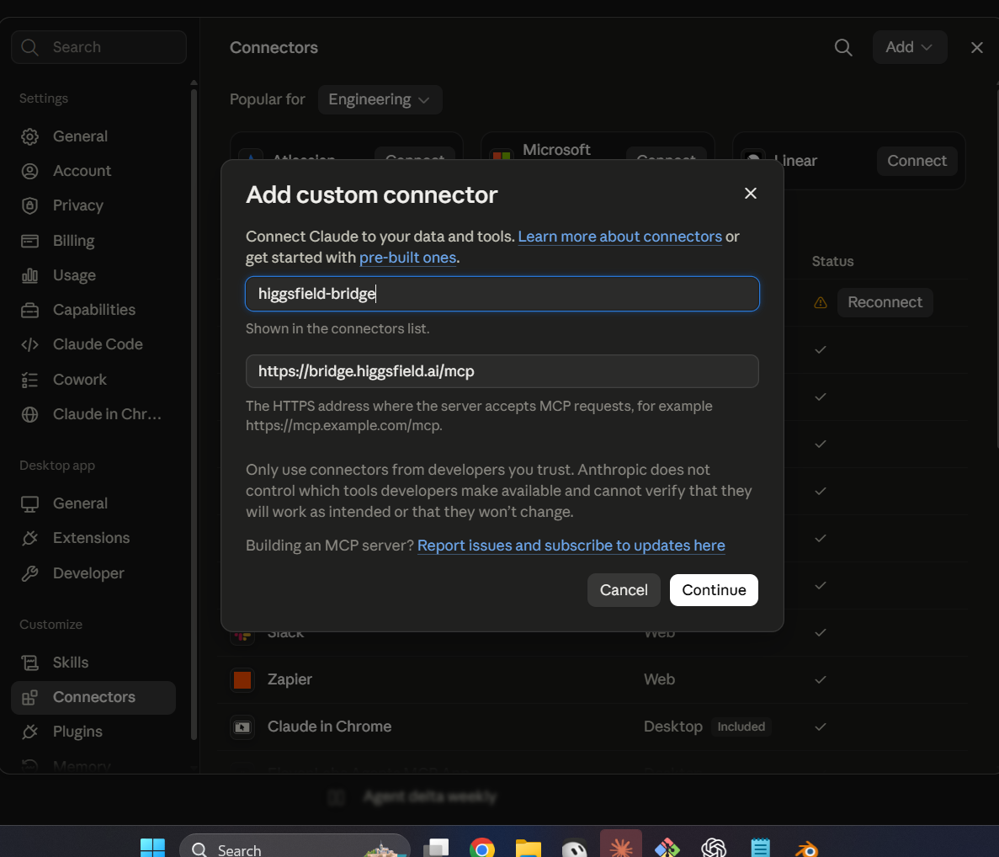
https://bridge.higgsfield.ai/mcp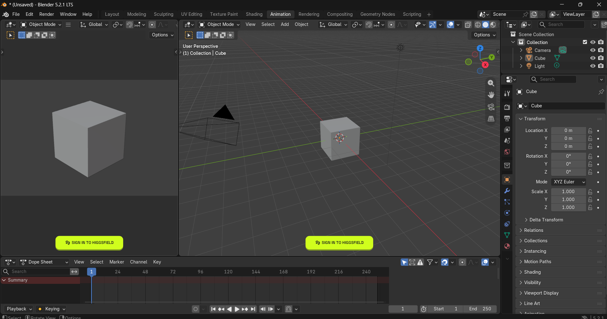
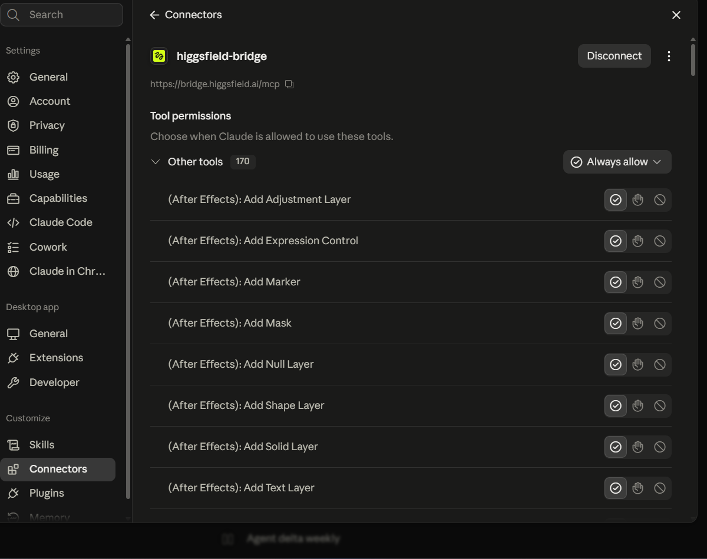
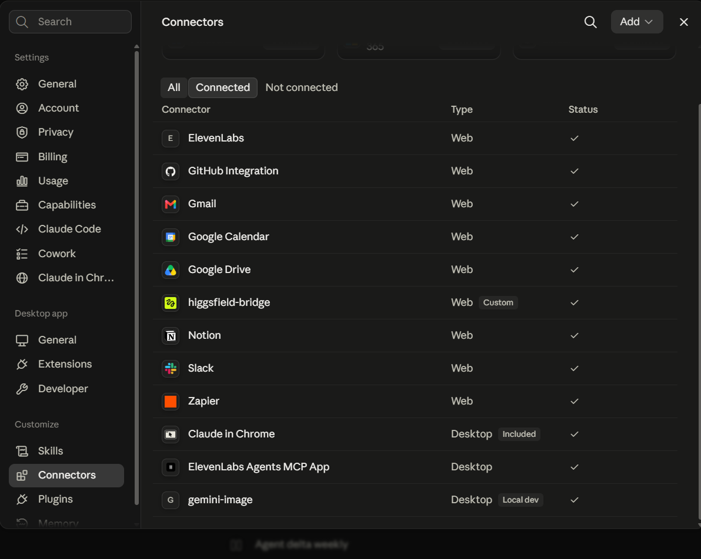
The previz was never the destination. The follow-up brief: use the v2 previz as a guide and generate a real video — a ninja walking down a lane in a park lined with tall trees — on a $7 fal.ai budget. The reference: the torii-path fight scene from the same YouTube video that inspired this project.
Before any credit moved, the agent researched what fal.ai actually offers today and picked wan-vace-14b/depth — a video-to-video model whose own demo is a person walking down a street — then verified pricing from the live model page ($0.08/s at 720p, $0.04/s at 480p, billed at 16 fps output) and budgeted the whole plan up front: cheap 480p tests, one 720p full pass, retry margin, all inside $7. The screen-recording previz was rejected as a guide (UI chrome everywhere); a clean render was scheduled instead — free.
A quiet architectural trick carried the whole part: Blender's Python runtime doubled as a gateway to the local machine. Headless Blender renders, pip install, and the fal API scripts all ran as detached local processes launched through the bridge — which means the FAL_API_KEY was read from a local .env by a local script and never entered the conversation. The same pattern later ran gh and git to create and push this very repository.
Blender previz (720 frames, EEVEE, headless)
→ clean 16 fps guide video (no UI, ffmpeg)
→ fal-ai/wan-vace-14b/depth ($0.08 / video-second @ 720p)
depth map extracted per frame = structure control
text prompt = appearance
→ generated video, spliced with ffmpeg
Every fal call ran on the local machine via the bridge, reading FAL_API_KEY from a local .env — the key never left the machine. Total spend: ~$4.03 of the $7 budget, including six 480p test iterations at $0.20 each.
Depth-guided video-to-video turned out to be a negotiation: the model paints whatever the depth map asserts, so the previz proxy is the character design. Six test iterations, each fixing what the previous one proved:
| # | Guide state | Result |
|---|---|---|
| 1 | Original box person | Environment spectacular; character = boxes dressed in black cloth |
| 2 | Rounded mannequin (sphere head, capsule limbs) | Glossy vinyl robot — detached floating head reads as a ball joint |
| 3 | + AI-generated ninja reference image (ref_image_urls) | Backfired: studio-mannequin stance transferred literally → fabric dress-form |
| 4 | Far segment instead of close pass | Distance helps — head finally reads as masked — but figure faces the wrong way |
| 5 | Connected body: hips, shoulder overlap, thick neck, forward lean | Real fabric, natural stride — still turns to face the camera |
| 6 | + katana modeled onto his back | Solved. The asymmetric geometry forces "seen from behind" better than any prompt could |
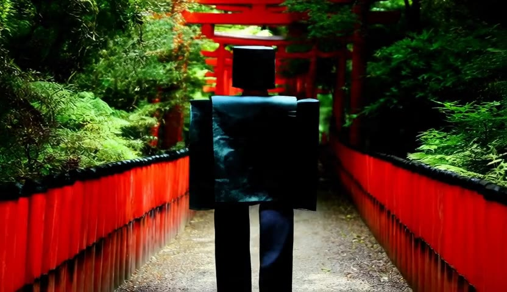
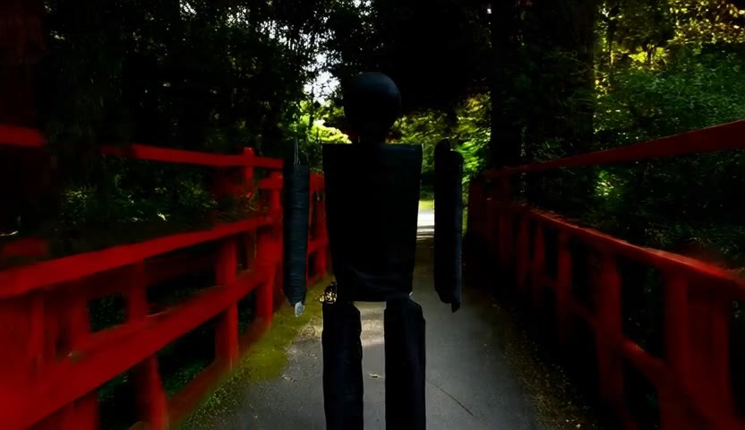
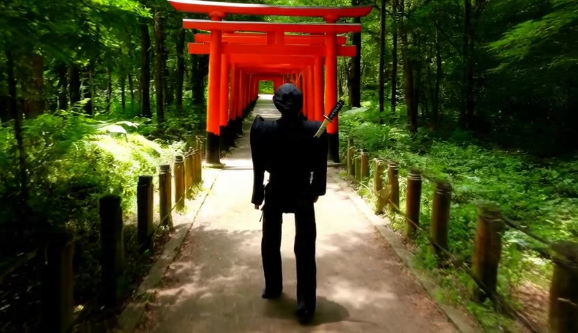
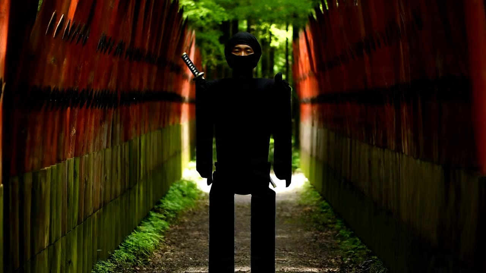
The full 30 s ran as one continuous 720p generation ($2.40) — one consistent world, no scene drift. It kept the ninja back-view throughout (the same depth cue that fixed the direction also overpowered the "face visible from the front" phase), so the face reveal was generated separately: the frontal camera beat re-run with a front-view prompt ($0.40), then spliced into the master with half-second crossfades in ffmpeg.
Blocking and final, frame-locked. Watch the walls become torii lines and every camera beat land identically — or drag the divider yourself in the interactive synced wipe.
| Spend | What it bought |
|---|---|
| 6 × $0.20 | 480p test iterations — each one a diagnosis (the "silhouette negotiation" above) |
| $0.003 | flux/schnell ninja reference image (test 3) |
| $2.40 | the 30 s full pass at 720p, seed 920133674 |
| $0.40 | the 5 s face-reveal pass, same seed |
| ≈ $4.00 of $7 | total — everything else (13 previz stages, 3,600 rendered guide frames, all editing) was local and free |
Every asset behind the final cut — the 13 stage .blend files, the guide videos, prompts, runner scripts, reference image, and the raw generated passes — is archived alongside this repo with a manifest and a four-step reproduction recipe.
In depth-guided generation, geometry is the prompt. Six iterations proved that the text prompt loses every argument with the depth map: boxes stayed boxes, a floating head stayed a ball, and one katana modeled onto the proxy's back achieved what three prompt rewrites could not. Art-direct the guide, not the words.
Decouple what the camera looks at from where it goes. A Track-To constraint on an aim empty plus a keyed route on a dolly empty turns “hero always in frame, no cuts” from a per-frame prayer into a structural property.
Audit numerically, verify visually — and know which wins. The numeric sweep caught collisions and framing violations a human would scrub past; the viewed frame caught a bad composition the numbers approved. When they disagree, render.
Geometry constrains cinematography. A 2.4 m corridor caps lateral camera distance at ~1 m, and at 1 m a 1.8 m figure cannot fit a 25 mm frame. The fix wasn't fighting the math — it was a framing accent that turned the constraint into camera language.
Live APIs shift under you. Blender 5.2's slotted actions broke a decade-old idiom (action.fcurves) mid-session. Idempotent scripts — clear, then rebuild — made every retry safe.
Backups after every stage cost nothing and buy everything. Eight timestamped stage copies meant every experiment was reversible; the user's working file was never overwritten without an explicit request.